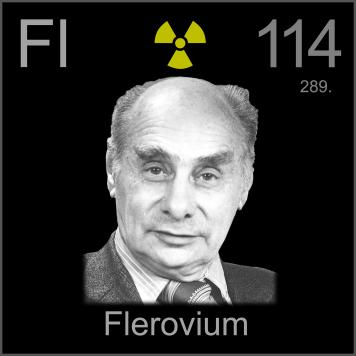

HOME
PREVIOUS
NEXT

Flevorium
Atomic Weight: 289[note]
Density: N/A
Melting Point: N/A
Boiling Point: N/A
Flerovium is named for the Flerov Laboratory of Nuclear Reactions, itself named for Soviet physicist Georgy Flerov. It was first detected in 1998 but not named until 2012.